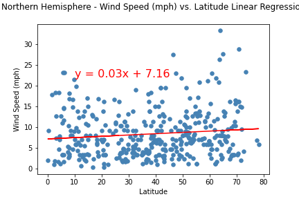
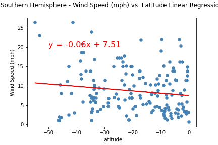

Wind Speed

With our current analysis, there is no obvious relationship between latitude and wind speed, so further analysis is needed. It is easy to see that there may be some correlation; as we can notice that a much larger number of cities in the northern hemisphere report over 20 mph of wind.
Analysing Northern Hemisphere and Southern Hemisphere Separately
In this analysis, there is no strong correlation between Latitude and Wind Speed in the northern hemisphere.

There is no strong correlation between Latitude and Wind Speed in the southern hemisphere either.